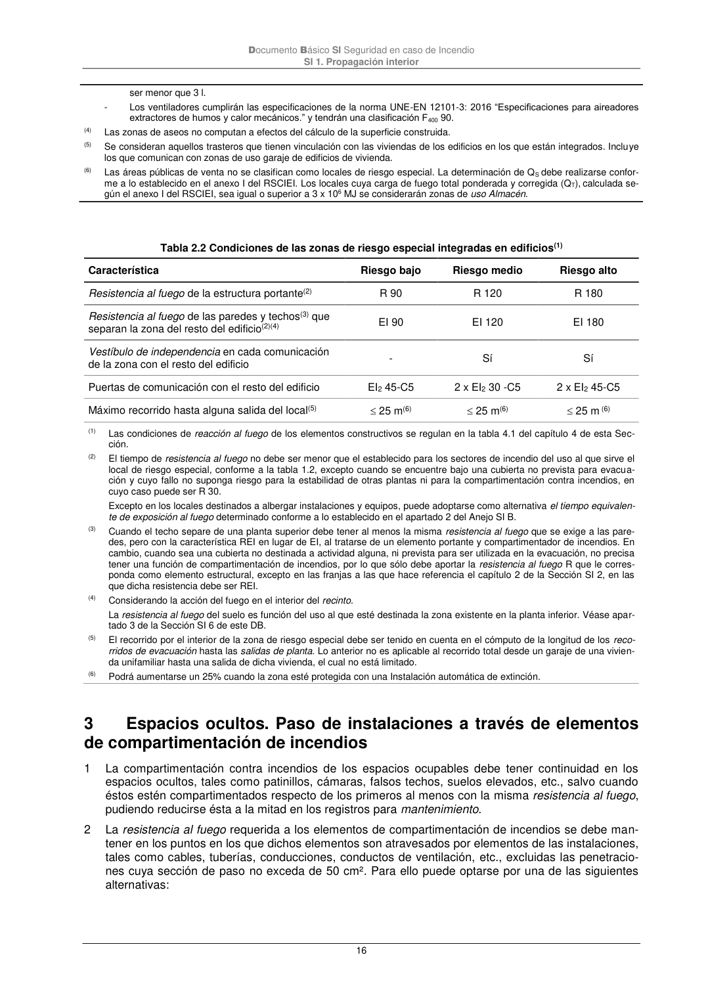

DB-SI Seguridad en caso de incendio · edición 2025-03-04 · capa oficial
Documento DB-SI-oficial · SHA-256 del PDF 0a2e78cd62471d9cc5cfe2efbc6aa39fdbad73c124aea7b039f9de96c141e105
Copia fiel del PDF fuente · Fuente oficial
Ficha de la disposición en la fuente oficial
Formatos: JSON del segmento · Markdown
2 x EI2 30 -C5 2 x EI2 45-C5 2 x EI2 45-C5 Máximo recorrido hasta alguna salida del local(5) 25 m(6) 25 m(6) 25 m (6) (1) Las condiciones de reacción al fuego de los elementos constructivos se regulan en la tabla 4.1 del capítulo 4 de esta Sec- ción. (2) El tiempo de resistencia al fuego no debe ser menor que el establecido para los sectores de incendio del uso al que sirve el local de riesgo especial, conforme a la tabla 1.2, excepto cuando se encuentre bajo una cubierta no prevista para evacua- ción y cuyo fallo no suponga riesgo para la estabilidad de otras plantas ni para la compartimentación contra incendios, en cuyo caso puede ser R 30. Excepto en los locales destinados a albergar instalaciones y equipos, puede adoptarse como alternativa el tiempo equivalen- te de exposición al fuego determinado conforme a lo establecido en el apartado 2 del Anejo SI B. (3) Cuando el techo separe de una planta superior debe tener al menos la misma resistencia al fuego que se exige a las pare- des, pero con la característica REI en lugar de EI, al tratarse de un elemento portante y compartimentador de incendios. En cambio, cuando sea una cubierta no destinada a actividad alguna, ni prevista para ser utilizada en la evacuación, no precisa tener una función de compartimentación de incendios, por lo que sólo debe aportar la resistencia al fuego R que le corres- ponda como elemento estructural, excepto en las franjas a las que hace referencia el capítulo 2 de la Sección SI 2, en las que dicha resistencia debe ser REI. (4) Considerando la acción del fuego en el interior del recinto. La resistencia al fuego del suelo es función del uso al que esté destinada la zona existente en la planta inferior. Véase apar- tado 3 de la Sección SI 6 de este DB. (5) El recorrido por el interior de la zona de riesgo especial debe ser tenido en cuenta en el cómputo de la longitud de los reco- rridos de evacuación hasta las salidas de planta. Lo anterior no es aplicable al recorrido total desde un garaje de una vivien- da unifamiliar hasta una salida de dicha vivienda, el cual no está limitado. (6) Podrá aumentarse un 25% cuando la zona esté protegida con una Instalación automática de extinción. 3
